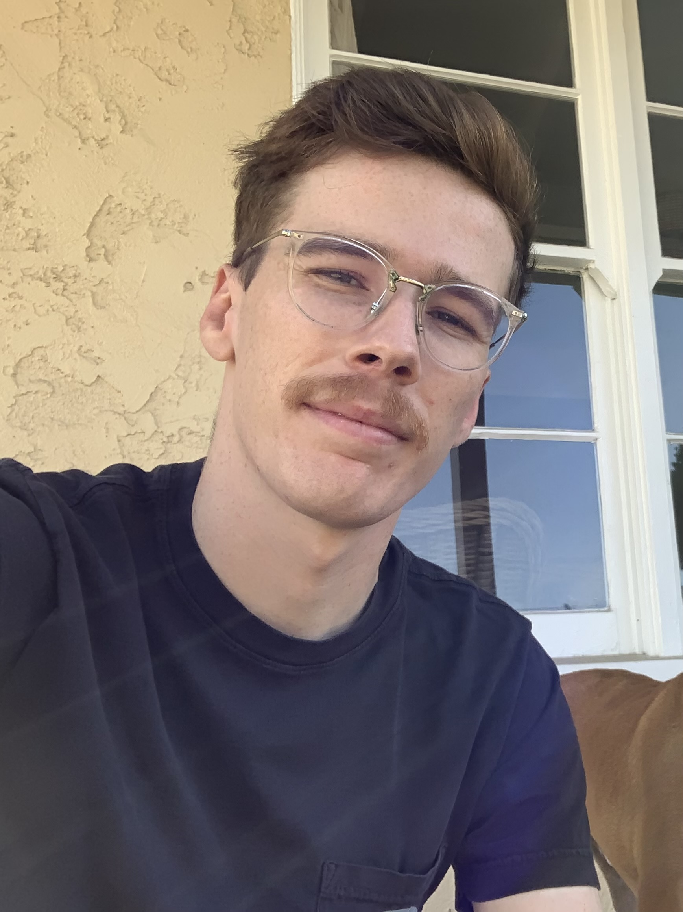

Ignacio Dominguez Moral
IGNACIO DOMINGUEZ MORAL
ABOUT ME
I studied Human Communication and graduated from Cal State Montery Bay Cum Laude with the goal of entering the video game industry as a community manager. Life had a different path in mind for me and I found myself teaching English abroad in Spain. After two years of teaching my contract expired and I came back to the States with the goal of completely shifting career paths. Two years was enough for me to realize that teaching was not my thing, and though I tried to get in to the video game industry upon my return, my lack of experience in the field barred me from entry.
My goals now are still in line with the video game industry. As a lifelong gamer I've always wanted to turn my hobbie into a career. During my two years in Spain I became interested in the programming world and thought it would be a great way for me to broaden my skillset and eventually help me get in to the gaming industry.
For now my goals are simple: Master my craft. Programming is a whole new ball game- something I've never done and in a field of study completely different from what I'm used to. As a lifelong English guy, going towards a Math career is daunting but exciting and new. I'm excited to see what challenges are in store and just how far I can go down the programming rabbit hole.
TECHNOLOGIES
MY PROJECTS

CONTACT ME
Find more of my work on GitHub